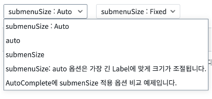
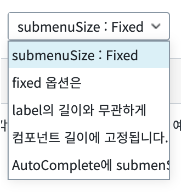
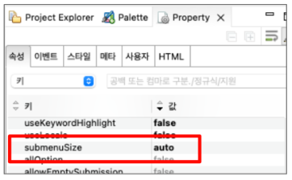

AutoComplete과 SelectBox의 공통 속성 submenuSize 사용 예제입니다. submenuSize를 이용해서 선택 항목의 크기를 자동으로 조절 할 지 선택합니다. - auto : Label의 텍스트 길이에 맞게 선택 항목의 크기를 조절합니다. - fixed : Label의 텍스트 길이와 상관없이 컴포넌트의 길이에 맞게 고정 된 너비를 갖습니다.
AutoComple의 submenuSize 옵션 비교 auto / fixed
SelectBox의 submenuSize 옵션 비교 auto / fixed
STEP 1. 서브 메뉴 크기를 비교합니다. (AutoComplete, SelectBox 동일)
컴포넌트를 클릭해 나타나는 선택 메뉴의 크기를 비교합니다.
그림 1.브라우저(Chrome) 실행 예시[1] - submenuSize = auto

그림 2.브라우저(Chrome) 실행 예시[2] - submenuSize = fixed

STEP 1. 컴포넌트의 속성을 지정합니다.
[필수] submenuSize // [default: "auto", "fixed]
예시 1) submenuSize auto 사용
submenuSize="auto"
예시 2) submenuSize fixed 사용
submenuSize="fixed"
그림 3.웹스퀘어5 SP5 스튜디오의 Property View(속성창) 예시

[소스 코드 예시]
<!-- AutoComplete 컴포넌트의 submenuSize 사용 예시입니다. --> <w2:autoComplete ... chooseOptionLabel="submenuSize : Auto" ...> <!-- 중략 --> </w2:autoComplete>
submenuSize